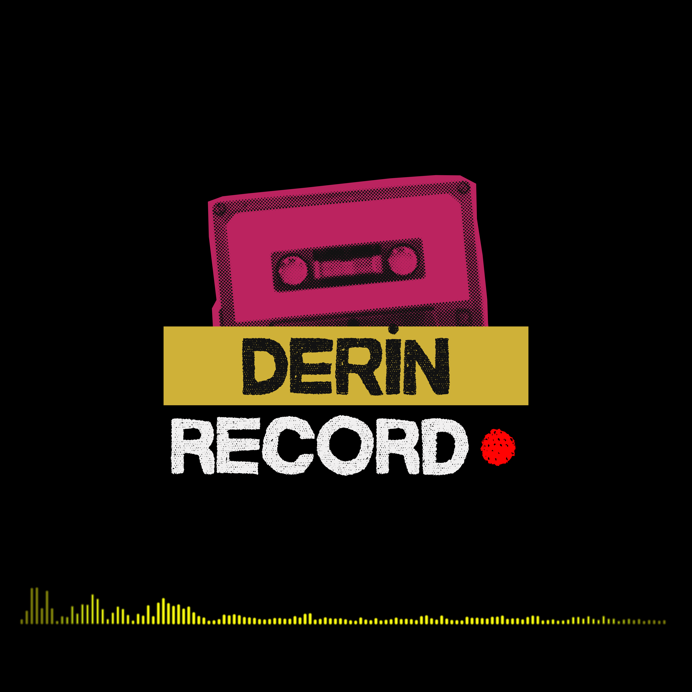
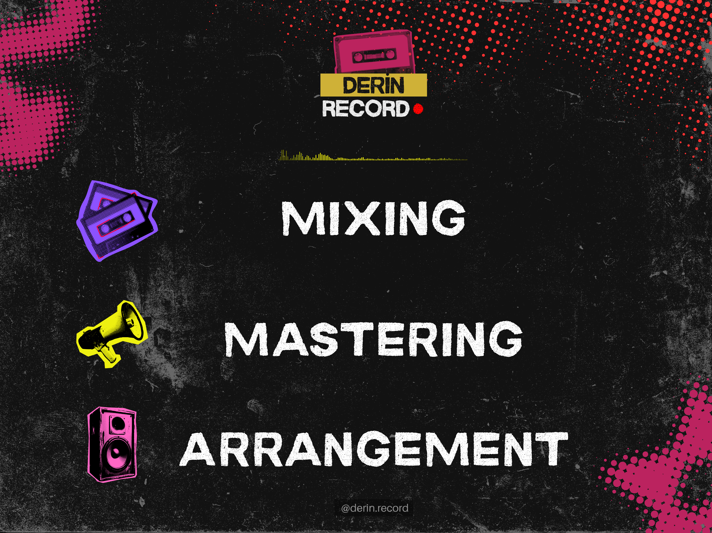
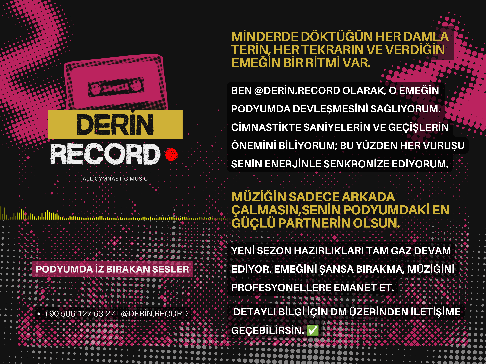
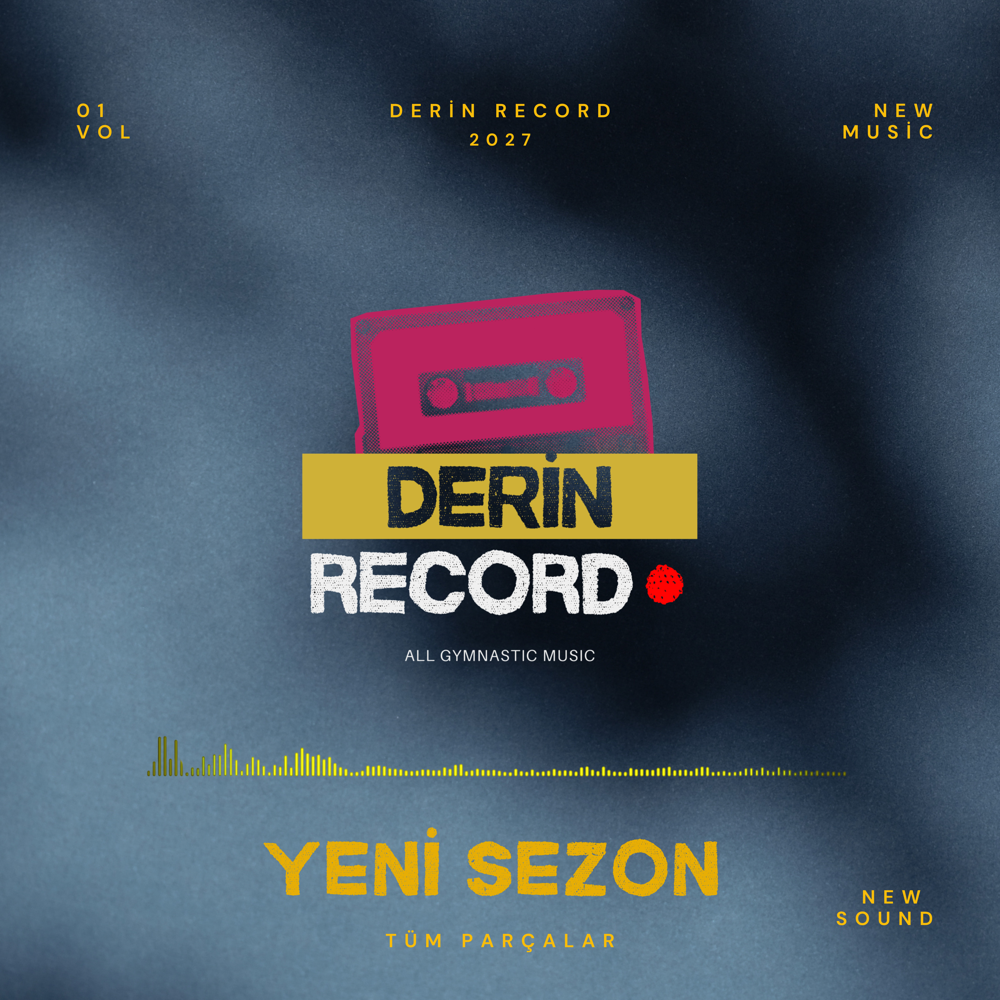

MIXING
Geçişleri güçlü, akışı net performans miksleri.
NE İÇİN MÜZİK ARIYORSUNUZ?
Her hareketin kendi ritmi var. Derin Record, performansının enerjisine uygun müziği tasarlar.
CANLI YAYINAkrobatik Cimnastik Federasyon Kupası13–15 Kasım · İstanbul SancaktepeİZLE ↗Kafe, restoran, otel ve mağazalar için telif derdi olmayan, markanıza özel çalma listeleri. Tek panelden bütün şubeleriniz.
Film, dizi ve reklamlar için özgün müzik ve ses tasarımı. Sahnenin duygusunu sesle güçlendiriyoruz.

DEMO KASETLER
Kasete yaklaş; branşına özel ses dünyasını keşfet. Her sayfada indirmen gerekmeden dinleyebileceğin demolar var.
KURUMSAL MÜZİK LİSANSI
Kafeler, mağazalar ve oteller için özgün üretim müzik lisansı. Ticari mekanlarda bireysel müzik aboneliklerini çalmak lisans ihlalidir — Derin Record, tamamı kendi stüdyosunda üretilmiş arşivini yıllık lisansla sunar.
MEKAN DEMOLARI
Her mekan türü için gün dilimlerine göre hazırlanmış çalma listeleri. Bir listeyi açın, mekanınızda nasıl duyulacağını dinleyin.
02 — SESİNİ BUL
Fikirden son notaya kadar, performansına özel bir ses dünyası.
Geçişleri güçlü, akışı net performans miksleri.
Sahne ses sistemlerinde dengeli ve etkili sonuç.
Hareketlerine, sürene ve hikâyene özel düzenleme.

01 — DERİN RECORD
Her tekrarın, her geçişin ve verdiğin emeğin bir ritmi var.
Derin Record, ritmik cimnastik performansları için enerjiyle senkronize, özgün ve profesyonel müzikler üretir. Müziğin güçlü partnerin olsun.


04 — YENİ SEZON
Yeni sezon hazırlıkları tam gaz devam ediyor. Müziğini şansa bırakma; podyuma seninle hareket eden bir sesle çık.
DETAYLI BİLGİ AL